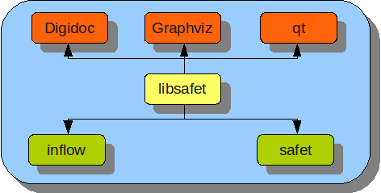

SAFET (Sistema Automatizado de Firma Electrónica y Estampillado de Tiempo) es una herramienta basada totalmente en software libre (de libre uso y distribución), multiplaforma, que permite a personas que interactúan con sistemas de información, gestionar documentos electrónicos, verificar, modelar y visualizar de forma inteligible, inteligente, personalizada y adaptada sus datos y activos de información, utilizando diagramas, gráficos, tablas, listas, reportes, o salidas personalizadas apreciables en Internet o en aplicaciones de escritorio, de forma tal que, se cuente como elemento adicional, la confianza de la identificación legal en Internet que es la firma electrónica. Los productos específicos de este proyecto son:
SAFET Sistema Automatizado para la Firma Electrónica y Estampado de Tiempo - Componente XPCOM de Mozilla Firefox para aplicar firma electrónica Copyright (C) 2008 Victor Bravo (vbravo@cenditel.gob.ve), Antonio Araujo (aaraujo@cenditel.gob.ve) CENDITEL Fundación Centro Nacional de Desarrollo e Investigación en Tecnologías Libre. Este programa es software libre; Usted puede usarlo bajo los términos de la licencia de software GPL versión 2.0 de la Free Software Fundation. Este programa se distribuye con la esperanza de que sea útil, pero SI NINGUNA GARANTÍA tampoco las implícitas garantías de MERCANTILIDAD o ADECUACIÓN A UN PROPÓSITO PARTICULAR. Consulte la licencia GPL para más detalles. Usted debe recibir una copia de la GPL junto con este programa; si no, escriba a la Free Software Fundation Inc. 51 Franklin Street, Piso, Boston, MA 02110-1301, USA.
A continuación se presenta las funcionalidades de SAFET:

OpenXaDES (www.openxades.prg)